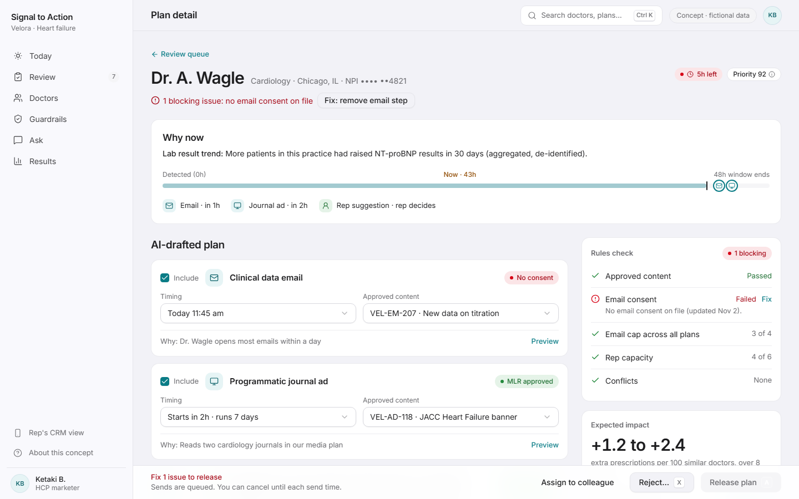
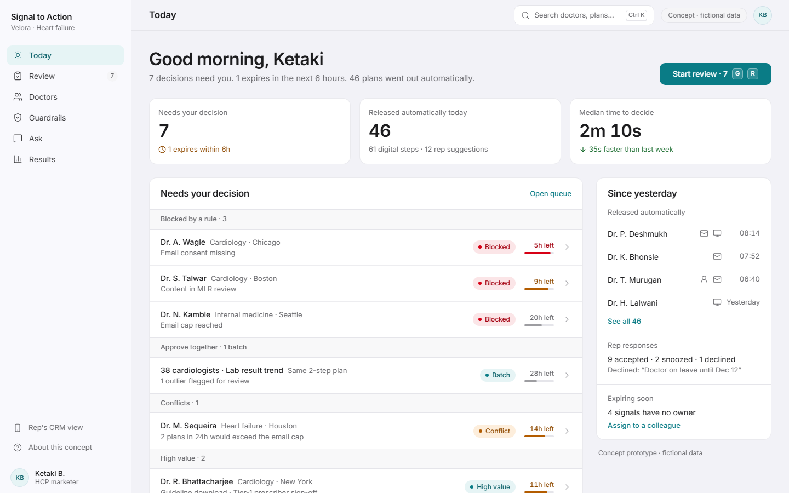

A concept for the screens where a pharma brand team decides what happens after a doctor-level signal: what goes out automatically, what needs a person, and what the sales rep sees.


Finding the signal isn't the hard part. Acting well within 48 hours is. If every plan waits for a person, signals expire; if nothing does, trust breaks the first time a rule is missed.
Bet: plans that pass every guardrail go out automatically. People review only exceptions (blocked rules, conflicts, high-value doctors, batches), and those few decisions are fast, safe and explainable.
| Gap in v1 | Fix in v2 |
|---|---|
| Approve every plan | Review by exception, batches, auto-release rules |
| Marketer approves rep visits | Rep gets a suggestion and decides; answer flows back |
| One precise number | Ranges, confidence, “How we know” |
| “Undo” after sending | Send queue: cancel until send time |
| On/off edits only | Timing, approved content, add step, redraft with a note |
| Cap ignored other plans | Cap across all plans and brands; conflict merge |
Epic: review only the plans that need a human; fix, adjust and release each in under 3 minutes, knowing it passes every rule.
9 stories · 14 edge cases (expired, no consent, MLR review, cap, conflict, CRM down, rep capacity, outlier, empty, cancel after release…) · definition of done · proposed API · open questions.
Metrics: 70%+ auto-released · < 3 min to decide · < 5% expired unreviewed · < 3% sends cancelled · 60%+ rep acceptance.